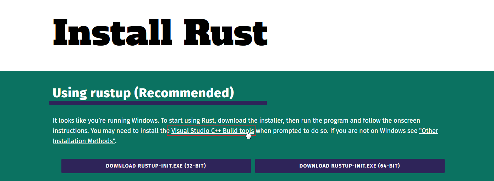
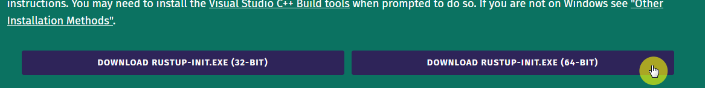

2020 Wing Rust Study

2020년도 광주과학기술원 전산 동아리 WING에서 진행할 러스트 프로그래밍 공식 가이드(통칭 꽃게책) 스터디를 위한 페이지 입니다.
참여자
- 김예지
- 김현서
- 김현성
스터디 역할
스터디는 다음 3 역할 중 하나를 각각 맡아서 진행할 예정입니다.
- 발표자 : 발표자료를 준비(예제코드, 책 읽으면서 궁금해서 나눠보면 좋겠다 생각하는 점, 읽어볼만한 글), 스터디 메인 진행
- 서기: 현장에서 발생한 질의 응답, 실습상황에서 주고 받은 문제 해결 방법, 발표 자료에 대해 주고 받은 문답 정리, 발표 시간 외에도 슬랙에서 주고 받은 내용인데, 유용하거나 발표자료에 누락된 자료 정리
- 정리자: 발표자와 서기한테서 자료를 받아 GitHub에 업로드
매 스터디 마다 역할을 바꿔서 진행할 예정입니다.
스터디 일정 조율
- 9월 8일 : 3단원
- 9월 15일 : 4단원
- 9월 22일: 5단원, 6단원
- 9월 29일: 추석 연휴
- 10월 6일 : 7단원
- 중간고사 기간(2주 쉼)
date: 2020-08-19
Rust 제안서
분야
- Rust
대상
- (필수)Rust에 관심이 있는 사람 Or Rust가 왜 인기 있는지 궁금한 사람
- (우대) C, C++ 에서 포인터를 경험해 보신적이 있으신 분
- (우대) 다른 프로그래밍 언어에서 자료구조나 공부 경험이 있으신 분
강의 진행 방식
- 독서 모임 방식
- 기본적으로 책을 기반으로 진행을 할 예정임.
- The Rust Programming Language(러스트 프로그래밍 공식 가이드)
- 어느 정도 문법이 익숙해지면 단순한 자료구조 문제를 백준에서 찾아서 해볼 생각임.
- 책을 미리 읽게 함: 구글 드라이브 스프레드시트에 독서 상황 및 요약 기록
- 프로젝트 단원(2, 12, 20 단원)은 진행자 없이 모여서 만드는 식으로 진행될 예정
- 스터디 진행원 중 매주 한 명을 선정해서 토픽을 진행하라고 할 예정
- 사용하는 발표자료의 형식은 제한이 없으나, 확장자는
.md로 해줄 것
- 사용하는 발표자료의 형식은 제한이 없으나, 확장자는
- 기본적으로 책을 기반으로 진행을 할 예정임.
- 코드 공유 및 소감 공유 방식
- 모임이 지나면 짧은 소감문을 작성하게 시킬 것
- 2달 or 3달 단위로 긴 소감문을 작성하게 할 것
- 소감문 및 강의 자료는 전부 다 공개된 장소에 올릴 예정입니다.
- 다른 사람에게 전달하는 것에도 어느 정도 목적이 있기 때문에 아마 팀 블로그(티스토리나 github page)로 공개할 에정입니다.
- 저장용, 공유용 저장소/페이지를 한번에 관리할 수 있는 Github Page가 편할 것 같기는 합니다.
- 모임이 지나면 짧은 소감문을 작성하게 시킬 것
- 진도 나가는 속도:
- 이 책은 총 12 단원으로 구성되어 있고, 한 학기는 약 3개월 정도이므로 한 주에 한 챕터 정도를 나가는 것을 목적으로 하고 싶습니다.
- 다만 시험 기간 등 여러 요인으로 인해 초반 3 챕터 정도는 굉장히 빠르게 진행할 생각입니다.
강의 자료
- 러스트 프로그래밍 공식 가이드(스티브 클라브닉, 캐롤 니콜스 씀/ 장현희 옮김, 제이펍)
- 이 책의 저장소는 rust-lang/book에 소스와 영문판이 올라와 있지만, 한국어 판도 보는 것을 추천드립니다.
- GIST 도서관에 책을 신청했는데, 예산 없다고 거절 당했어요. 10월달에 다시 신청할 예정입니다.
사용 도구
- (필수) Rust와 그 안에 포함된 패키지(rustfmt, cargo)
- (필수) mdbook으로 정정 사이트(책) 만들기
- (추천) VS Code와 Rust 확장(RLS를 통한 강력한 자동완성)
- (추천) Marp(마크다운을 통한 슬라이드 작성, 소스코드도 쉽게 넣을 수 있습니다.)
왜 Rust를 배워야 할까요?
C와 C++이 아직도 현역인 이유
지금까지 정말로 로그래밍 언어가 개발되었습니다. 여러 언어가 나오고, 또 여러 언어가 사라졌습니다. 그렇지만 과거에 만들어져도 현재에도 폭넓게 쓰이는 언어들이 있습니다. C와 C를 발전 시킨 C++ 계열입니다. 이 언어는 거의 모든 일을 할 수 있습니다. 그렇지만 만들어진 시점도 옛날이고, 수동적이고 안전하지 않은 메모리 관리, 느린 컴파일 속도, 복잡한 문법으로 인해 많은 언어들이 나오고 C와 C++의 자리를 가져갔습니다.
그렇지만 메모리 구조 같이 시스템의 밑바닥에서 작업해야하는 부분을 건드릴 수 있는 건 C와 C++ 밖에 없기 때문에, 아직도 시스템 프로그래밍이나 웹 브라우저 같이 복잡한 곳, 혹은 극한까지 성능이 필요한 곳, 하드웨어 성능제약이 매우 심한 곳에서는 C와 C++이 아직도 현역으로 쓰이고 있습니다.
Rust의 탄생
Rust는 원래 Mozila 재단의 그레이던 호어의 개인 프로젝트 였습니다. 당시 Mozila 재단은 웹브라우저 성능을 높히기 위해 새로운 돌파구를 찾으려 했습니다. 이 프로젝트에는 파이어폭스 퀀텀이라는 이름이 붙었고, 이 프로젝트를 통해 만들어진 렌더링 엔진에는 Servo라는 이름이 붙었습니다. 현재는 어느 정도 완성이 되어 파이어폭스에서 직접 써볼 수 있습니다.
웹 브라우저는 기본적으로 매우 복잡합니다. 특히 요즘은 웹에서 할 수 있는 일이 폭발적으로 증가하는 시점에서는 더 복잡합니다. 이런 상황에서 성능을 올리는 것은 힘듭니다. 특히 C++로 짤 때는 어려운 문법 구조로 인해 더 힘듭니다. 거기에 메모리 관리 같이 성능에 직접적으로 영향을 미치고 안전에 중요한 영역 때문에 더 작성이 힘듭니다.
이 때 주목 받은 것이 Rust입니다. 수동적이고 예측가능하면서 안전한 메모리 관리, 현대적 언어 설계를 도입하여 보다 쉬워진 설계 같이 다양한 장점을 가지고 있는 Rust를 Mozila에서 채택하면서 더 진보된 웹 브라우저 엔진을 제작할 수 있게 되었습니다. 현재도 Mozila 재단은 Rust 재단의 가장 큰 스폰서 중 하나입니다.
Rust의 장점
Rust는 C++로 해야하는 일을 보다 편리하고, 안전히 하기 위해 만들어 졌고, 그에 따라 여러 장점을 가지고 있습니다.
- 빠른 실행속도 : Rust는 컴파일이 된 후, 빠르게 실행하게 위해 여러 최적화를 도입하였습니다. 또한 컴파일 속도도 C++에 비하면 비교적 개선되었습니다.
- 안전하고 예측가능한 메모리 관리: Rust는 Java같은 언어와 다르게 C++ 처럼 직접 메모리 관리를 합니다. 그렇지만 Rust는 컴파일 단계에서, 잘못된 메모리 접근을 막습니다. 또한 직접 메모리 관리를 하기 때문에 메모리 사용을 보다 직관적으로 이해할 수 있습니다. 여러분이 C 계열에서 포인터를 배워 보셨거나, 자료구조 과목에서 메모리 때문에 고민해보신 적 있다면 좋은 선택이 될 것입니다.
- 개발도구가 정리되어 있습니다. : 포맷터, 라이브러리 문서 작성 도구, 빌드 도구, 패키지 관리 도구 전부 다 언어 안에 포함되어 있고, 각 OS에서 동일한 실행을 보장합니다.
- 꾸준히 사용처가 늘고 있습니다. : Rust 사용자는 갈수록 늘어나고 있으며, 성능과 엄격함이 필요한 분야에서 갈수록 Rust 사용이 늘어 나고 있습니다. 작게는 명령쉘에서 사용하는 프로그램에서 시작해, 웹 서버, 웹 앱,웹 브라우저까지 갈수록 사용처가 늘고 있습니다.
- 커뮤니티가 활발합니다: 가장 활발한 개발 커뮤니티 중 하나인 스택오버플로우에서 선정된 개발자들이 좋아 하는 언어에서 최근 계속 상위권을 유지하고 있고, 많은 개발자들이 러스트를 개선하고 발전하고 확장시켜 나가는 데 기여하고 있습니다.
참고문헌
- 왜 Rust언어인가?
- 꽃게책
책 만들기
mdbook
이 프로젝트는 마크다운 형식으로 파일을 공유하고, Marp 같은 툴을 빌려서 현장에서 보여주기도 할 예정입니다. 그렇지만 Github Pages를 통한 배포를 하기 위해 정적인 사이트 형태로도 렌더링할 예정입니다. 저희가 이 렌더링 과정에서 사용할 툴이 mdbook입니다. 마크다운 파일을 기반으로 책과 비슷한 형태로 제작해줍니다. Gitbook과 같은 책의 형태로 만들어 주는 다른 플랫폼도 있고, Jekyll 같은 다른 정적 사이트 생성기를 통해서 만들 수도 있지만 Rust로 짜여있기 때문에 이 도구를 선택하게 되었습니다.
mdbook 설치
mdbook은 cargo를 통해서 손쉽게 설치가 가능합니다.
cargo install mdbook
mdbook으로 책 만들기
1.목차 구성
src/에 마크다운으로 본인이 담당한 파일을 만들면, 이를 목차 정보를 담당하는 SUMMARY.md에도 명시를 해줘야 합니다. 탭으로 하위 챕터를 구별합니다.
예를 들어, Chapter 1의 하위로 러스트 설치하기라는 제목으로 install_rust.md가 담고 있는 정보를 넣고 싶다면 아래와 같이 SUMMARY.md를 구성하면 됩니다.
# Summary
<!-- 목차를 작성하는 페이지입니다. 목차 작성도 꼭 확인해주세요. -->
- [Chapter 1](./chapter_1.md)
- [러스트 설치하기](./install_rust.md)
2. 책 만들기 및 업데이트
단순히 책을 만들고 싶은 거면, 아래와 같이 입력 후 Push를 해주세요.
mdbook build
웹브라우저에서 바로 확인하고 싶다면 아래와 같이 입력하면, 빌드와 동시에 웹브라우저를 열어줍니다.
mdbook build --open
2020년 9월 1일
시각
- 2020년 9월 1일 20시
- Zoom을 통해 진행
역할 분담
첫 발표는 서기와 발표자를 동시에 진행할 예정입니다.
- 발표자: 김현서
- 서기: 김현서
marp: true
러스트 설치하기
2020년 9월 1일 김현서
Rust
Rust를 설치하는 방법은 여러 방법이 있지만, rustup이라는 도구를 통해서 rust와 그와 관련된 도구를 설치할 수 있습니다. 설치는 윈도우 기준입니다.
1. Rust-lang install 접속
- https://www.rust-lang.org/tools/install 접속
- Visual Studio C++ Build Tools 링크 클릭 
2. Visual Studio C++ Build Tools 설치
- 링크 클릭 :
vs_BuildTools.exe다운로드 후 실행 - 이후 Visual Studio Build Tools 2019를 기본 옵션으로 설치

3. RUSTUP-INIT.EXE 실행
- https://www.rust-lang.org/tools/install로 들어와서 64비트 다운로드 후 실행 
- 이후 default 옵션으로 설치하기 위해 1을 입력 후 실행

5. 설치 확인
-
설치 확인을 위해서 터미널(CMD, Bash, PowerShell이든 뭐든)에서 다음 명령어를 입력합니다.
rustc --version다음과 같은 형식으로 출력되면 성공한 것입니다.
rustc x.y.z. (abcabcabcc yyyy-mm-dd)
텍스트 에디터 Visual Studio Code 설치 및 세팅
- Rust를 메모장에서 공부할 수도 있고, 이 책을 따라가는 데 큰 불편함이 없을 수도 있겠지만, 그래도 편한 도구를 사용해 봅시다. Visual Studio Code는 여러 막강한 기능을 제공하는 에디터이지만 그건 스스로 찾아 보시고 여기서는 rust와 관련된 기능만 사용할 것입니다.
1. Visual Studio Code 설치
-
https://code.visualstudio.com/ 접속, 파일 설치 및 실행

2. Rust 확장 기능 설치
- https://marketplace.visualstudio.com/items?itemName=rust-lang.rust에 들어가 install 누르기
- 그러면 VSC에서도 그 확장 기능 창이 뜰 텐데 설치하면 됩니다.

3. 설정 지정
- 대부분의 설정은 GUI로 설정할 수 있는데, 몇몇 설정은 직접 파일을 수정하긴 해야합니다.
- 그 파일을 접속하긴 위해선 윈도우 탐색기에서
%appdata%/Code/User에 들어가면settings.json에 들어가서 편집해야합니다.
-
그래서 파일을 미리 작성해서 여기 적어놓았습니다.
{ "[rust]": { "editor.defaultFormatter": "rust-lang.rust", "editor.tabSize": 4 }, "editor.insertSpaces": true, "rust-analyzer.checkOnSave.overrideCommand": null, "rust-analyzer.debug.engine": "vadimcn.vscode-lldb", "rust-analyzer.rustfmt.overrideCommand": null, "rust.build_lib": false, "editor.formatOnPaste": true, "editor.formatOnSave": true, "editor.formatOnType": true, }
Git
- 가장 폭 넓게 쓰이는 버전관리 시스템입니다. 저희는 Github에서 제공하는 기능과 연계하여 배포용으로만 사용할 예정입니다.
Git 설치
- https://git-scm.com/downloads 들어가서 설치해주세요.

- Github에 가입해주세요.
기본적인 Git 사용법
1.SSH 키 등록
- Github에 기록을 올리고 내릴 때마다 인증을 하는 방법도 있지만 한 번에 진행하는 방법이 있습니다.
- https://git-scm.com/book/ko/v2/Git-%EC%84%9C%EB%B2%84-SSH-%EA%B3%B5%EA%B0%9C%ED%82%A4-%EB%A7%8C%EB%93%A4%EA%B8%B0
- 앞의 가이드를 참고해서 키를 만든 후, Github에 등록을 해야합니다.

-
저장소 (전체 폴더) 받기
git clone https://github.com/2020-Wing-Rust/2020-Wing-Rust.github.io.git -
저희는 정말 최소한의 기능만 사용할 것이기 때문에, VS Code를 통해서 Git을 관리하도록 하겠습니다.
- Git에서 작업을 기록하는 것을 commit, commit할 파일 목록에 올리는 것을 stage라고 합니다. vs code에서 저 버튼을 클릭하면 그 파일을 스테이징 할 수 있습니다.
- 스테이징 시점이 기준이므로, 추가적인 수정 사항도 포함하고 싶다면 다시 stage를 눌러주세요.
- 이후 위의 입력창에 적당히 커밋하는 내용을 요약한 후 Ctrl + Enter를 누르면 됩니다.

- 그 이후, 동기화를 눌러주세요. 이 작업은 최신버전으로 업로드(푸쉬)와 다운로드(풀)을 동시에 진행합니다.

Markdown
- 마크다운은 편하게 문서를 쓰기 위한 언어입니다. 현재 사용 중인 플랫폼도 마크다운 파일을 받아들여서 HTML 형식의 전자책으로 만드는 과정을 통해 배포되고 있습니다. 여기서는 직접적으로 문법을 안 다루겠습니다. 굳이 마크다운으로 자료를 만들 필요는 없거든요.
- https://heropy.blog/2017/09/30/markdown/
진행 중 기록사항
Visual Studio Build Tools 2019 중에서 뭘 설치해야 하나요?
맨 처음에 있는 Visual C++ 개발도구를 선택해서 설치하면 됩니다.
Git을 사용하는 이유
- Github Pages를 통한 웹사이트 제작
- 자료 저장
9월 2일
9월 8일 러스트 스터디 챕터 2
챕터 2 진행하면서 의문점이나 감상점
김현서
- 러스트에서 기본적으로 제공하는 여러 도구들(포맷터, 카고 등)이 편리하였다.
김현성
- 터미널만으로도 편하게 할 수 있는 도구가 언어안에 기본 포함되어 있었다.
- C++에서 유래된 것 같은 표현 법이 여러모로 많았다.
- 변수: 기본이 변경 불가인게 신기
- print가 매크로 제공된는게 신기하며 함수로도 제공되는 기능인지 궁금함
- A: 표준 입츌력을 담당하는 다른 함수가 있기는 하지만
print!와 같은 기능은 아님. 문서
- A: 표준 입츌력을 담당하는 다른 함수가 있기는 하지만
.으로 연결되는 체이닝이 신기함- 컴파일러가 인식하는 포맷팅 스타일이 비교적 자유로움
- A: 그렇지만 rustfmt가 기본 제공 되므로 자유로운 포맷 스타일이라고 하기는 힘들다.
김예지
- C 언어에서는
toml이 없었는데 뭔 개념인가- A: 데이터 형식을 표현하는 확장자로, 비슷한 것으로 JSON, YAML이 있다. 이 경우에서는 cargo에게 이 패키지에 대한 정보를 기록하는 용도로 사용되었다.
진도 계획 이야기
-
챕터 별로 분량이 다른데 챕터별로 나누면 불균형이 예상되므로, 전체적인 분량에 따라 조절할 예정
-
소유권은 러스트의 제일 큰 특징이기도 하고, 난해한 내용이므로 따로 다룰 것
-
예제를 만들어 보거나 참고할 만한 문제를 찾아보기 : 향후 발표 자료 등에 활용
-
추석 연휴에는 쉬는 것으로 결정
-
일정은 한 달 단위로 작성
-
9월 8일 : 3단원
-
9월 15일 : 4단원
-
9월 22일: 5단원, 6단원
-
9월 29일: 추석 연휴
-
10월 6일 : 7단원
-
중간고사 기간(2주 쉼)
다음 주 계획
- 발표자: 김예지
2020년 9월 15일
시각
- 2020년 9월 15일 20시 30분
- Zoom을 통해 진행
주제
- 챕터 3 일반 프로그래밍 개념 진행
- 다음 주 역할 분담
역할 분담
- 발표자: 김예지
- 서기: 김현서